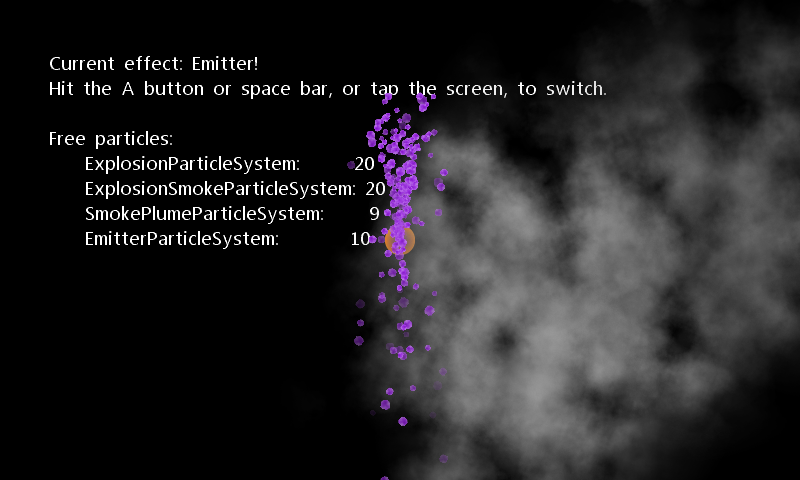

2D Particles Pipeline
Ported from Microsoft's XNA 4.0 2D Particles Pipeline sample.
Source for this sample on GitHub ↗

Play ▸Opens in a new tab.
About this sample
Four particle systems draw explosions, drifting smoke and a trail from a movable emitter. Their particle counts, textures, motion and blending come from settings compiled by the original XNA Content Pipeline. Switch effects to see how those settings change the result.
Controls
| Action | Keyboard / mouse | Touch / gamepad |
|---|---|---|
| Switch effect | Space | Tap / A |
| Move emitter | Move mouse in Emitter mode | Left stick on gamepad |
| Exit | Escape | Back |